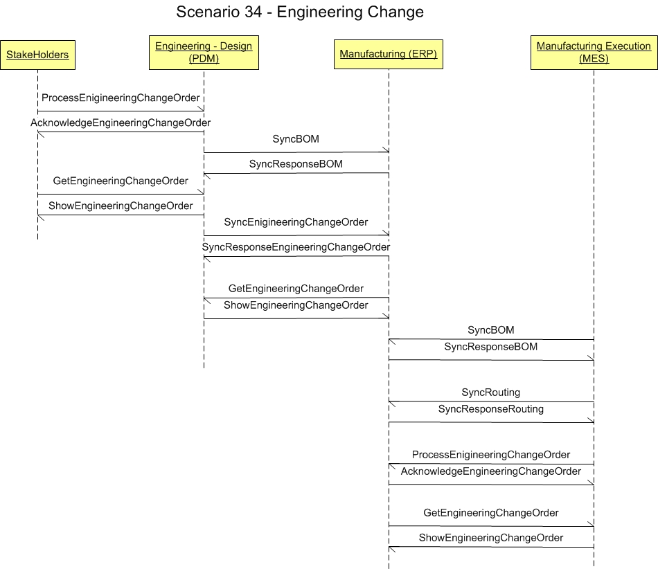

Scenario
34 - Engineering Change Scenario
34.0
Overview
Scenario #34
describes the integration of stake holders, engineering - design
(PDM), manufacturing (ERP) and manufacturing execution (MES) software.
The
purpose of this scenario is to enable the visualization of the
participants in the process and the dialogs between them for this
specific integration. This scenario is not meant to be the only model
for integrating general ledger applications to a budget
applications. This is simply one model that may be used to guide one's
own integration efforts.
34.1
Scenario
The scenario
below contains the participants involved in the
interaction, the dialog flows or conversation between them, certain
assumptions about the sequence of events, and assumptions about the
technical approach, for example, publish and subscribe.
This
is a model to be used as a design recommendation, not a required
approach.

34.2
Assumptions
This
scenario assumes a loosely coupled, asynchronous approach with
transaction management required but not
explicitly defined.
This scenario describes
a model for one or more Design Engineering
components integrating with other common Manufacturing and Distribution
components.
The environment for this integration may be within a single
enterprise, or across enterprises.
There may be instances where the
information in an engineering change request can be at the level of
requirements, and desired behavior.
As an engineering change moves
through its lifecycle, the information must become more and more
detailed.
As the change moves into the actual engineering change order
phase, it must contain all the information needed to manufacture the
item or items.
34.3
Component Definitions
This
scenario contains four major participants; stakeholders and design
engineering, manufacturing requirements planning (MRP) and
manufacturing execution (MES) software.
The
definitions and
details of these
applications are
left to the designer but are assumed to contain the functionality as
defined by what is commonly sold in the commercial market place today.
This
definition is broadly accepted by the scenario designers and is a
direct result of the decision not to
define how the
processing takes place within any individual application.
Each
application must be
able perform the services defined by the message BOD (business object
document), but the internals of the application are not
required or
desired to be exposed at this level of standardized abstraction.
The
most important factors in defining these participants is to ensure
that an integration designer can communicate the requirements
precisely
enough to detail the interfaces needed and their interrelationships.
34.4
Business Workflow (Sequence)
The
business workflow is graphically represented by starting at the
Scenario top and reading from top down and from left to right.
This scenario has two
major events in the workflow sequence.
- The trigger event is the request for an engineering change that is made from
any client department. It initiates a synchronization process to ensure that all
of the components in the integration scenario will have the same data
necessary to communicate.
- Next is the creation of the engineering change request in the engineering systems.
- The next event may be that the engineering change is communicated broadly
to a set of contributors to a design.
- The
fourth event may be that the engineering change is believed by the
designers to meet the requirements stated in the specification. A
notification is sent out to a list of approvers to sign off on the
change before it can go to the next stage.
- The
fifth event is that the approvers send in their approvals and the
design change can be sent to manufacturing engineering to make any
modifications to the assembly operations for any effected parts, or
equipment.
- The
sixth event is that manufacturing engineering are informed that the
authorized method of manufacture has changed.
34.5
Exception Handling
Exception
handling is highly localized as the result of an implementation's
infrastructure, management and business rules. As such, this section of
the Scenario documentation is planned to be used as a
guide to help understand the additional intent of these Scenarios. If no exceptions are noted here, then it can be assumed that
the Scenario designers agreed that the Scenario is straight forward and
has no additional needs:
- Note
that the Confirm BOD is not shown in the scenario and that it is the
most obvious method for
providing an application level exception and feedback mechanism between
business
software components. Full Confirm BOD use is described in other OAGIS
documentation in detail, but it should be noted that the specific use
of the Confirm
BOD may vary significantly from scenario to scenario and from
integration to integration.
- The
Confirm BOD is typically intended to be used by the original receiving
application to communicate to the sending application that the
information
it sent in the message BOD (business object document) was received and understood and can be
processed.
- If the
information was not
received or nor understood, or contained errors of any type, it is
accepted practice for the OAGIS users to presume that the data was
not acted on and in the absence of a Confirm BOD within a partnership previously agreed to
time limit to resend the original message again.
- As errors and assumptions are the bane of any implementation,
it is strongly recommended that the Confirm BOD be used to prevent any
potential problem although it is not a requirement by OAGIS use.
Copyright
OAGi 2016 - All Rights Reserved --
OAGIS
release 10.3 - Document Number: 20160901-34 |